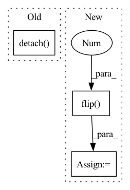

Pattern ID :3237
Before Change
fig, axes = plt.subplots(1, 1, figsize=(12, 4), squeeze=False)
ax = axes[0, 0]
im = ax.imshow(mean_bias.detach() .squeeze().cpu().numpy())
im.set_cmap(cmap=plt.cm.RdBu)
fig.colorbar(im, ax=ax)
ax.set_title("Mean bias [Kelvin]")After Change
inv_normalize = model_module.denormalization
init_condition, gt = inv_normalize(x), inv_normalize(y)
init_condition = np.flip( init_condition.detach().cpu().numpy(), 2 )
pred = inv_normalize(pred)
pred = np.flip(pred.detach().cpu().numpy(), 2)
gt = np.flip(gt.detach().cpu().numpy(), 2)
bias = pred - gt // B, 1, 32, 64In pattern: SUPERPATTERN
Frequency: 4
Non-data size: 3
Instances Fragment ID: 12384061
Project Name: aditya-grover/climate-learn
Commit Name: da02a4f3496c35890c879f72c6b7502159d4b516
Time: 2023-02-21
Author: jason.jewik@ucla.edu
File Name: src/climate_learn/utils/visualize.py
M Class Name: AnonimousClass
N Class Name: AnonimousClass
M Method Name: visualize_mean_bias(3)
N Method Name: visualize_mean_bias(3)
M Parent Class:
N Parent Class:
M File Name: src/climate_learn/utils/visualize.py
N File Name: src/climate_learn/utils/visualize.py
M Start Line: 130
M End Line: 140
N Start Line: 132
N End Line: 146
Before Change
for i, tensor in enumerate([init_condition, gt, pred, bias]):
ax = axes[index][i]
im = ax.imshow(tensor.detach() .squeeze().cpu().numpy())
im.set_cmap(cmap=plt.cm.RdBu)
fig.colorbar(im, ax=ax)
After Change
init_condition, gt = inv_normalize(x), inv_normalize(y)
init_condition = np.flip(init_condition.detach().cpu().squeeze().numpy(), 0)
pred = inv_normalize(pred)
pred = np.flip( pred.detach().cpu().squeeze().numpy(), 0 )
gt = np.flip(gt.detach().cpu().squeeze().numpy(), 0)
bias = pred - gt
for i, np_array in enumerate([init_condition, gt, pred, bias]): Fragment ID: 12384057
Project Name: aditya-grover/climate-learn
Commit Name: da02a4f3496c35890c879f72c6b7502159d4b516
Time: 2023-02-21
Author: jason.jewik@ucla.edu
File Name: src/climate_learn/utils/visualize.py
M Class Name: AnonimousClass
N Class Name: AnonimousClass
M Method Name: visualize(5)
N Method Name: visualize(5)
M Parent Class:
N Parent Class:
M File Name: src/climate_learn/utils/visualize.py
N File Name: src/climate_learn/utils/visualize.py
M Start Line: 74
M End Line: 76
N Start Line: 71
N End Line: 79
Before Change
// introduce negative strides that are not yet supported in pytorch
precision = torch.cat([reversed(precision[sl]), torch.ones(1, dtype=precision.dtype, device=precision.device)])
recall = torch.cat([reversed(recall[sl]), torch.zeros(1, dtype=recall.dtype, device=recall.device)])
thresholds = reversed(thresholds[sl]).detach() .clone()
return precision, recall, thresholds
After Change
// introduce negative strides that are not yet supported in pytorch
precision = torch.cat([precision.flip(0), torch.ones(1, dtype=precision.dtype, device=precision.device)])
recall = torch.cat([recall.flip(0), torch.zeros(1, dtype=recall.dtype, device=recall.device)])
thresholds = thresholds.flip(0 ) .detach().clone()
return precision, recall, thresholds
Fragment ID: 12384053
Project Name: pytorchlightning/metrics
Commit Name: a6320cfae434b96d41fdf94d6387f4aed02b9062
Time: 2023-03-21
Author: 49699333+dependabot[bot]@users.noreply.github.com
File Name: src/torchmetrics/functional/classification/precision_recall_curve.py
M Class Name: AnonimousClass
N Class Name: AnonimousClass
M Method Name: _binary_precision_recall_curve_compute(3)
N Method Name: _binary_precision_recall_curve_compute(3)
M Parent Class:
N Parent Class:
M File Name: src/torchmetrics/functional/classification/precision_recall_curve.py
N File Name: src/torchmetrics/functional/classification/precision_recall_curve.py
M Start Line: 267
M End Line: 278
N Start Line: 267
N End Line: 274